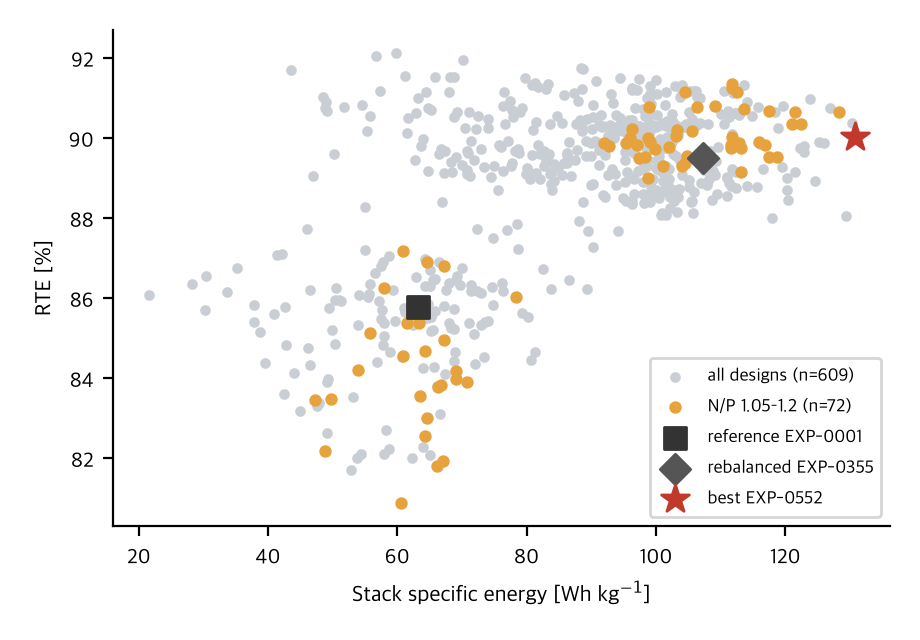

Sodium ESS Virtual Lab
정치형 ESS용 Hard Carbon // Na₃V₂(PO₄)₂F₃ 소듐이온 셀의 전극 설계 최적화와 신소재 탐색: 물리기반 가상실험과 머신러닝 원자간 퍼텐셜을 결합한 자율 연구 캠페인
레퍼런스 셀은 재료가 아니라 균형이 문제였다.
N/P 재균형이 설계 효과보다 컸다.
공개 파라미터셋 그대로의 기준 셀은 N/P 0.79로 방전 시 음극이 먼저 고갈되어 양극 용량의 45 %만 쓰였다. 재료를 그대로 두고 음극 두께만 늘려 N/P 1.10으로 맞추자 스택 에너지밀도가 63 → 107 Wh kg⁻¹이 되었다. 전극 설계는 그 위에 +14 %를 더했다. 개선율은 반드시 재균형 기준에 대해 읽어야 한다.
EXP-0488: 두꺼운 양극, 조밀한 음극,
N/P 1.10.
ESS 관행(N/P 1.05–1.2, 면적당 용량 ≥ 1 mAh cm⁻²)을 만족하는 설계 32건의 (스택 Wh/kg, RTE) Pareto 프론트에서 선정했다. 양극 NVPF 115 µm·기공도 26 %, 음극 하드카본 127 µm·기공도 45 %·입자 반경 2.0 µm. 집전체·분리막 질량 비중이 줄어 122.5 Wh kg⁻¹, 231 Wh L⁻¹, RTE 90.3 %, 면적당 용량 1.92 mAh cm⁻². 대가로 전해질 염 농도 최소비가 0.44로 낮아져 고율 운전 여유는 별도 검토가 필요하다.

설계 사양
| 구분 | 항목 | 값 |
|---|---|---|
| 양극 | 두께 [µm] | 114.6 |
| 양극 | 공극률 | 0.26 |
| 양극 | 활물질 부피분율 | 0.52 |
| 양극 | 입자 반경 [µm] | 0.59 |
| 양극 | 활물질 면적당 로딩 [mg/cm²] | 19.1 |
| 양극 | 이론용량 [mAh/cm²] | 2.45 |
| 음극 | 두께 [µm] | 126.8 |
| 음극 | 공극률 | 0.453 |
| 음극 | 활물질 부피분율 | 0.546 |
| 음극 | 입자 반경 [µm] | 1.97 |
| 음극 | 활물질 면적당 로딩 [mg/cm²] | 11.1 |
| 음극 | 이론용량 [mAh/cm²] | 2.7 |
| 셀 구조 | N/P 비(이론용량) | 1.1 |
| 셀 구조 | 스택 두께 [µm] | 296.4 |
두께·기공도·입자반경은 탐색 입력값, 로딩·이론용량·N/P·스택두께는 가정 밀도 기반 유도값, 성능은 DFN 계산값.
원자 하나씩 바꿔 본 양극·음극·전해질 후보.
Materials Project 구조를 받아 pymatgen으로 치환·탈소듐 구조를 만들고 MACE-MP-0으로 완화해 전압·부피변화·혼합에너지를 계산했다. 비활성 치환 원소(Mg, Al, Ti⁴⁺, Zr)는 산화환원 전자 예산으로 추출 가능 Na를 제한했다. 폴리음이온 계열의 MLIP 절대 전압은 약 0.5 V 낮게 나오므로 기준 계열 대비 Δ로 읽는다.
양극 치환 후보 (Pareto 상위)
| 조성 | 계열 | V | ΔV vs base | ΔE_mix [meV/atom] | ΔVol [%] | mAh/g |
|---|---|---|---|---|---|---|
| Na1Mn0.5Fe0.5P1O4 | Olivine_NaFePO4 | 3.25 | +0.21 | -1.4 | -13.1 | 155 |
| Na1Al0.5Fe0.5O2 | O3_NaFeO2 | 3.06 | -0.19 | 10.7 | -2.1 | 139 |
| Na2Mn0.5Fe0.5P1O4F1 | Na2FePO4F | 3.41 | +0.26 | -1.7 | -2.9 | 124 |
| Na2Mn0.25Fe0.75P1O4F1 | Na2FePO4F | 3.28 | +0.13 | -1.1 | -2.4 | 124 |
| Na1Al0.25Fe0.75O2 | O3_NaFeO2 | 3.15 | -0.11 | 6.7 | -1.6 | 129 |
| Na2Mn0.5Fe0.5P1O4F1 | Na2MnPO4F | 3.19 | -0.25 | -1.9 | -7.8 | 124 |
혼합에너지 ≤ 0은 고용체 안정, 부피변화가 작을수록 수명에 유리. 이론용량은 가역 Na 분율 규칙 기반 유도값. 훌(hull) 안정성은 미계산.
음극: 두-상 평가의 문헌 대조와 치환 후보
| 계열 | 탈소듐상 | MLIP V | 문헌 V | 팽창 [%] |
|---|---|---|---|---|
| NTP | NaTi2(PO4)3 | 1.49 | 2.1 | 8 |
| TiO2 | TiO2 | 0.66 | 0.8 | 20 |
| Sb | Sb | 0.57 | 0.6 | 285 |
| Sn | Sn | 0.22 | 0.3 | 386 |
| P | P | 0.46 | 0.4 | 349 |
| Bi | Bi | 0.50 | 0.6 | 221 |
| 치환 후보 | V (Δ vs base) | 팽창 [%] | mAh/g |
|---|---|---|---|
| NaTiNb(PO4)3 | 1.00 (-0.49) | 7 | 119 |
| ZrTiO4 | 0.32 (-0.34) | 16 | 264 |
| Na2Ti3Nb(PO4)6 | 1.17 (-0.31) | 7 | 126 |
| NaZrTi(PO4)3 | 1.19 (-0.30) | 7 | 120 |
| ZrTi3O8 | 0.50 (-0.16) | 18 | 295 |
| Na2ZrTi3(PO4)6 | 1.35 (-0.14) | 7 | 126 |
합금 음극(Sb·Sn·Bi·P)의 전압·팽창률은 문헌과 일치한다. NASICON 음극에 Zr·Nb를 넣으면 전압이 내려가고(음극에 유리) 팽창 7 %를 유지한다. 기저상태 다형체는 MLIP 에너지로 선택했다.
고체 전해질: Na⁺ 확산
기준 물질(Na₃PS₄, NASICON)의 분자동역학 검증이 진행 중이다. 첫 20 ps 계산은 MSD 적합 r² < 0.9로 통계가 부족해 채택하지 않았고, 60 ps로 재계산한다.
아직 컴퓨터 안의 결과다.
다음 단계: 실측 곡선 대조 → 컷오프·프로토콜 재정의 → 고정 면적용량 기준 $/kWh·Wh/kg 목적함수 → 불확실성 전파 → 코인셀 실물 검증(기준 셀부터).
어떻게 계산했나
셀 모델. PyBaMM DFN, 공개 파라미터셋 Chayambuka 2022(Electrochim. Acta 404, 139764). 0.25C·25 °C, CC-CV(4.2 V, C/20 cut-off) 프로토콜의 2회차 방전값. 설계변수 8종(두께·기공도·입자반경·전도도/확산 배율), 라틴 하이퍼큐브 DOE(라운드당 144건), 비지배 정렬. 열모델은 lumped, 열물성은 가정값.
신소재. Materials Project(OPTIMADE) 구조 → pymatgen 치환 → MACE-MP-0(medium) 구조완화. 전압 V = −[E(Naₓ) − E(Na_y) − (x−y)E_Na]/(x−y), 혼합에너지 = 말단 조성 대비. 음극은 탈소듐상↔소듐화상 두-상 반응, 전해질은 700–1000 K Langevin MD의 MSD → Arrhenius 외삽 → Nernst–Einstein(자릿수 추정, MSD 적합 r² ≥ 0.9인 경우만 채택).
기록. 실험 레코드는 입력·출력·검증 JSON으로 append-only 보존되며 모든 수치에 산출 근거(계산값·유도값·가정값·문헌값)가 붙는다. 이 페이지는 레코드에서 스크립트로 생성한다.
인용
@misc{sodium_ess_virtual_lab_20260917,
title = {Sodium ESS Virtual Lab: autonomous virtual experiments for stationary-ESS sodium-ion cells},
author = {navicoby fleet, Sodium ESS Virtual Laboratory},
year = {2026},
note = {Simulation-only results (PyBaMM DFN, MACE-MP-0). Updated 2026-09-17. https://navicoby.github.io/sodium-lab/}
}